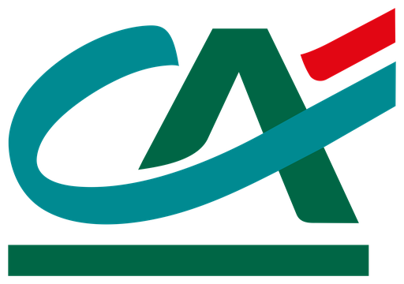

Bonus Crédit Agricole 50€+
Apri il Conto Online Crédit Agricole col codice invito, richiedi la Carta Visa Debit entro il 30/07 e fai almeno 1 transazione. Ricevi 50€ in Buono Amazon. Invitando fino a 8 amici arrivi a 400€, più fino a 200€ di extra (stipendio + spesa carta).
Come ottenere il bonus Crédit Agricole: procedura passo-passo
- Apri il Conto Online Crédit Agricole dall'invito e inserisci il codice promozionale nel campo apposito del form di apertura.
- Completa la richiesta di apertura del conto e della Carta Visa Debit entro il 30/07/2026.
- Attiva transazioni online e 3D Secure: servono le credenziali che arrivano per posta a casa.
- Fai almeno 1 transazione di qualsiasi importo con la carta, entro 30 giorni dall'apertura e comunque entro il 31/07/2026 (valgono POS, wallet digitali e acquisti online).
- Risulta ancora titolare del conto e della carta alla verifica del 31/08/2026.
- Ricevi 50€ in Buono Amazon, spedito via email entro 120 giorni dalla verifica.
✅ Suggerimenti
- Scegli la Carta Visa Debit in fase di apertura: è obbligatoria per il bonus.
- Inviti: dopo l'apertura, dalla sezione "Invita un amico" dell'app, 50€ a te e 50€ all'amico per ogni persona valida, fino a 8 amici (400€).
- Extra stipendio: +50€ con un vero accredito stipendio/pensione (causale ABI 27), mantenuto fino al 31/08/2026.
- Extra spesa: +50€ con spesa carta 1.000–1.999,99€, +100€ con spesa ≥ 2.000€ (entro 30 giorni dall'apertura e comunque entro il 31/07).
❌ Da evitare
- Aprire senza inserire il codice nel form (il bonus potrebbe non essere riconosciuto)
- Contare prelievi o spese stornate/annullate come transazione valida
- Confondere un bonifico SEPA scritto "stipendio" con il vero accredito ABI 27
- Chiudere conto o carta prima della verifica del 31/08/2026
- Già clienti Crédit Agricole o chi ha chiuso un conto dal 01/01/2021: esclusi. In caso di conto cointestato viene assegnato un solo premio.
Conviene il bonus Crédit Agricole?
Tra i bonus banca è uno dei più ricchi: 50€ in Buono Amazon solo per aprire conto + carta Visa e fare una transazione di qualsiasi importo. Con gli inviti si arriva a 400€ e con gli extra (stipendio e spesa carta) fino a 200€ in più. I punti di attenzione sono i tempi lunghi (verifica al 31/08, buoni entro 120 giorni dopo) e qualche passaggio tecnico, come l'attivazione del 3D Secure che richiede la lettera con le credenziali. Il premio è in Buoni Amazon, non in contanti.
👍 Pro
- 50€ base con una sola transazione di qualsiasi importo
- Inviti molto remunerativi: fino a 400€ con 8 amici
- Fino a 200€ di extra tra stipendio e spesa carta
- Conto e carta gratuiti (conto a canone zero per apertura entro il 30/07)
👎 Contro
- Premio in Buoni Amazon, non in contanti
- Tempi lunghi: verifica al 31/08, buoni entro 120 giorni dopo
- Serve attendere la lettera per attivare transazioni online e 3D Secure
- Esclusi già clienti e chi ha chiuso un conto dal 01/01/2021
Il bonus è erogato direttamente da Crédit Agricole. GoatLink non chiede alcun pagamento.
Domande frequenti sul bonus Crédit Agricole
Quanto si guadagna con Crédit Agricole?
Entro quando devo aprire il conto?
Quando arrivano i Buoni Amazon?
Cosa serve per l'extra stipendio?
Ultimo aggiornamento: